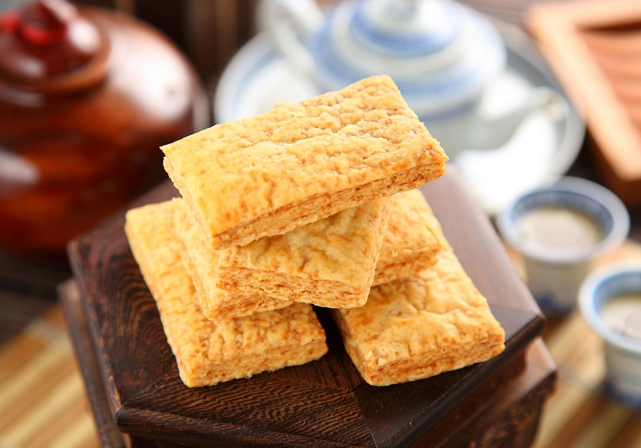
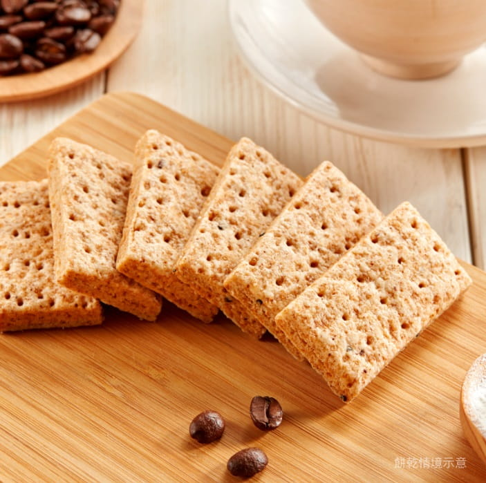
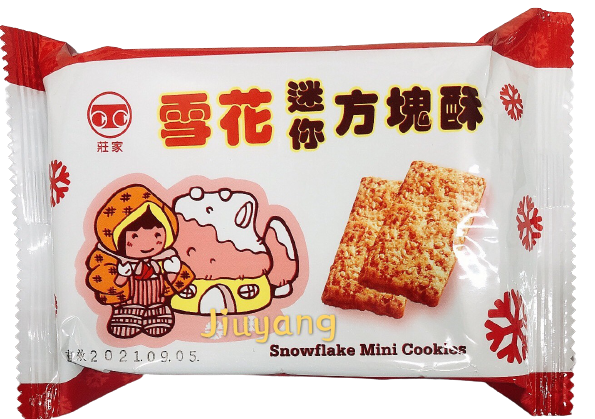
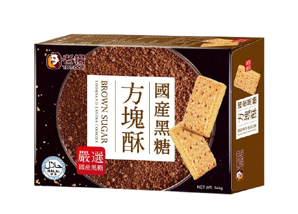
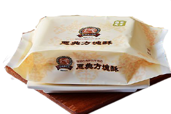

1.由來
發明人黨長發在中國大陸為空軍公職，
之後隨著國民政府播遷來台。因為當時政府財務狀態不佳，公務人員的待遇普遍偏低，為了生計，黨長發開始尋找副業。
在下班之餘，回想起家鄉特產烙餅的小販。但烙餅外帶不方便且會降溫而失去口感，便將中國北方的烙餅作法結合酥餅改良，
並將圓形改為正方形。
因為這種方形餅乾在當時還沒有正式名稱，

956年由黨長發取名之。又因外省籍的黨長發甚愛看古典宮廷戲，
一句「謝皇上恩典」竟無意間成了嘉義名産的代名詞，於1971年將其品牌命名恩典。
1979年，老楊方塊酥創辦人戴大可也在嘉義市民國路創立第一家店鋪，並將民國路命名「麵食街」。
創辦人表示，為了感念當初傳授給他麵食技術的楊姓老師傅，而將店命名之。
但在2009年，因眷村將重建國宅，老楊方塊酥所稱的麵食街正式走入歷史。
而莊家和弘家馨方塊酥的成立時間較晚，分別於1982年和1989年成立。
另外在香港時興隆公司也有發明方塊酥，但其公司發明的時間不明。
2.老楊
老楊方塊酥於1979年創立在嘉義市民國路上，
創辦人其實姓戴而非姓楊，品牌名稱是戴總經理為感念早期教導其麵食技術的楊姓師傅，
方以「老楊」命名。
草創期由於當時特殊的時空背景，

民國路附近是大面積的眷村，也使這個區域成為南北口味匯集、居民口中的麵食街；
方塊酥改良自台灣早期的眷村燒餅，為了能讓客人可以隨時取食，且更加酥脆易存放，
於是改良出「方塊酥」產品。
創辦人戴大可先生在十幾歲時，
就在此跟隨眷村內一位麵食楊師傅，學習到燒餅技術與方塊酥製作方法，
並培養出對烘焙的興趣。學有所成後，講究品質口感的戴總經理，自原料挑選、手工揉製麵糰、桿出上百層次餅皮，絕不經手他人，
並增長了烘烤時程，讓方塊酥入口後濃厚香氣更持久回繞。酥脆特殊的口感，多層次餅皮的香氣，
迅速將「老楊」打響名號，也讓方塊酥成為著名的嘉義特產。
3.傳承
方塊酥為嘉義地區特產之一，酥脆的口感贏得不少老饕的青睞，也是送禮的好選擇。
嘉義地區歷史較久、較有名氣為的「老楊」、「雪花」、「恩典」三家方塊酥店。
關於方塊酥的由來，老楊與恩典方塊酥各有不同說法。
老楊方塊酥表示，在二十幾年前，許多外省籍老兵在嘉義市民國路賣著燒餅油條，而老楊食品的創辦人在十幾歲時，
在那裡學會了燒餅的製作技術與其變化而來的方塊酥製作方法，而後在民國路開創了第一家餅舖。恩典方塊酥的創辦人黨長發先生在民國四十五年，
取中國北方烙餅與南方酥餅結合，製成一塊塊香、脆、酥具有中國特色的餅乾，而當時這種餅乾並無品名，於是黨先生將他取名為「方塊酥」。
恩典方塊酥為歷史四十五年的方塊酥老店，也是陳水扁總統於九十一年國宴上指定的方塊酥品牌，
更常常是國內新聞媒體爭相報導的對象。恩典方塊酥的價格雖然比較高，但是堅持以純手工方式製作，
每一塊方塊酥都是由師傅親手摺疊兩百多層，才拿去烘焙。材料也採用比較高級的麵粉；每天的方塊酥幾乎都是當天現做的，
產量不多，有時候重要節日甚至規定一位顧客只能買兩盒。
4.材料
食材：高筋麵粉、低筋麵粉、無水奶油、細砂糖、麥麩、黑芝麻、鹽、過濾水


